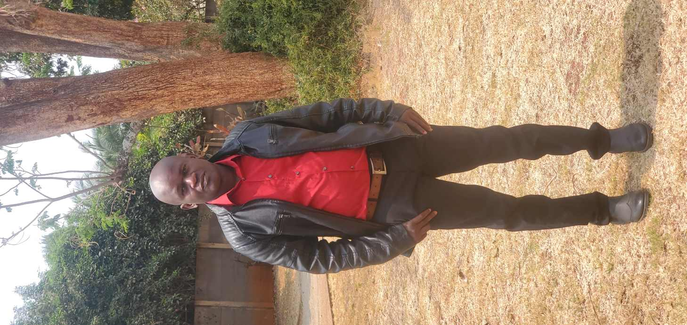

Munyaradzi Chiondegwa | WDD 130
Hello! My name is Munyaradzi Chiondegwa and I am from Harare, Zimbabwe. I am half deaf and passionate about software development. My goal is to create innovative technologies that improve communication for the deaf community. I enjoy reading, hiking, fishing, and cricket. Through this course, I hope to develop skills that will help me create software solutions that bridge communication gaps and empower individuals with hearing challenges.